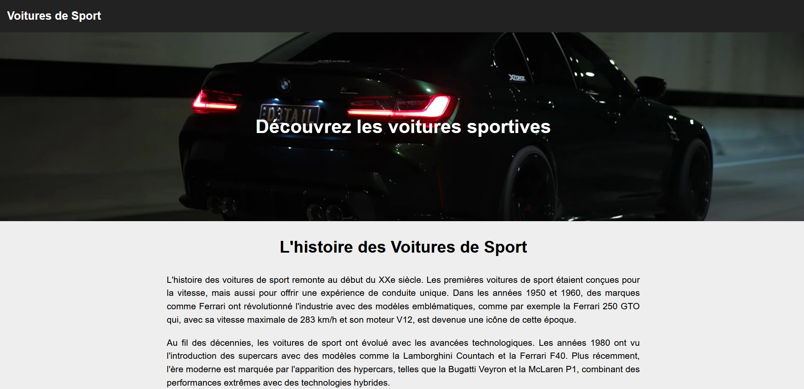
Projet 1
Site HTML/CSS
Conception d’une page web responsive.
BIENVENUE SUR MON SITE WEB !
Je suis Etienne Juillet, étudiant en deuxième année de BUT Réseaux & Télécommunications (Université Côte d’Azur). Dans le cadre de ma formation, je recherche un stage du 7 avril au 19 juin 2026 pour mettre en pratique mes compétences en réseaux, systèmes et développement web, et contribuer à des missions concrètes (déploiement, diagnostic, sécurisation, documentation).
Une sélection de projets de mise en situation professionnel menés pendant ma formation en BUT R&T.
Astuce : cliquez sur un projet pour ouvrir le détail, puis cliquez sur l’image pour l’agrandir.

Conception d’une page web responsive.
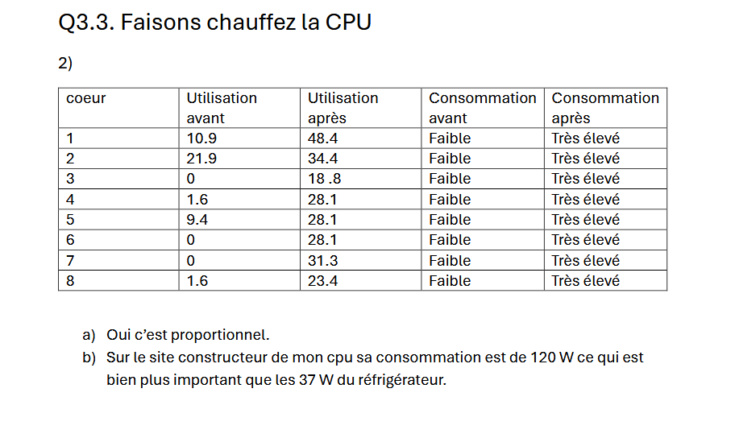
Diagnostic, mesures de débit et cartographie.
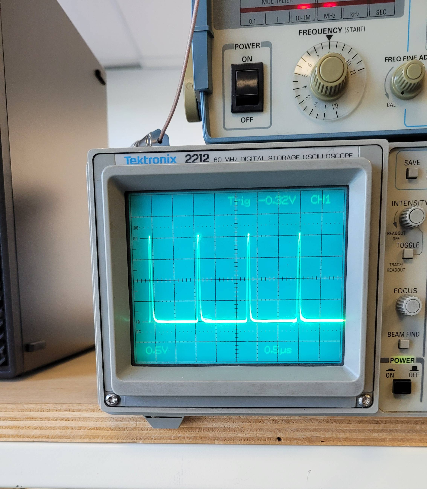
Mesures et interprétation des paramètres.
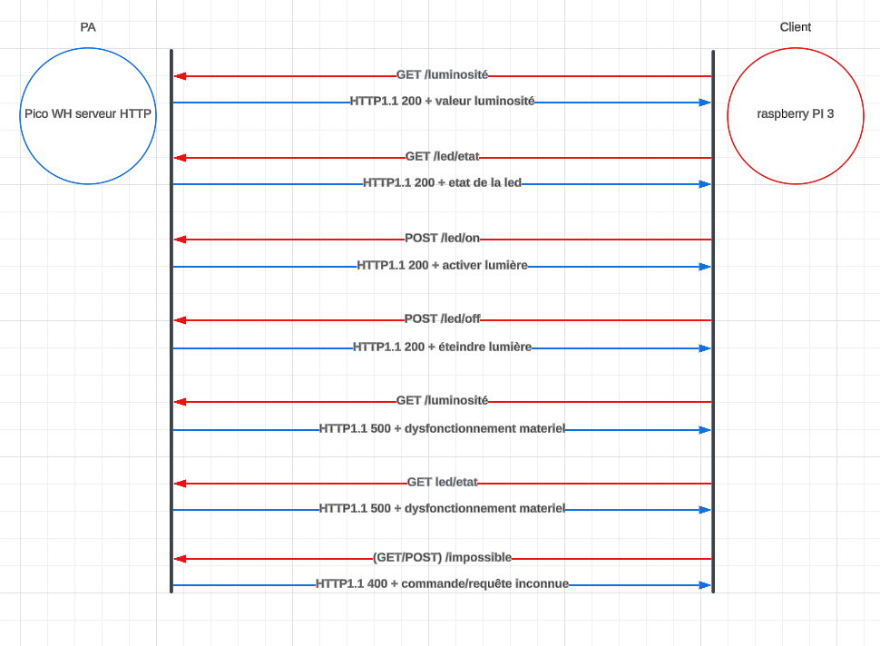
Expression du besoin et architecture Raspberry.
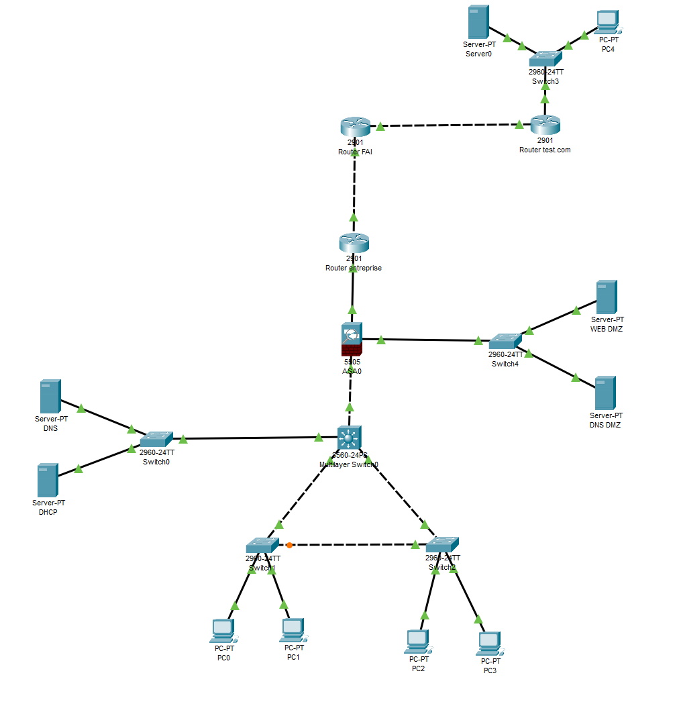
Architecture, segmentation et filtrage.
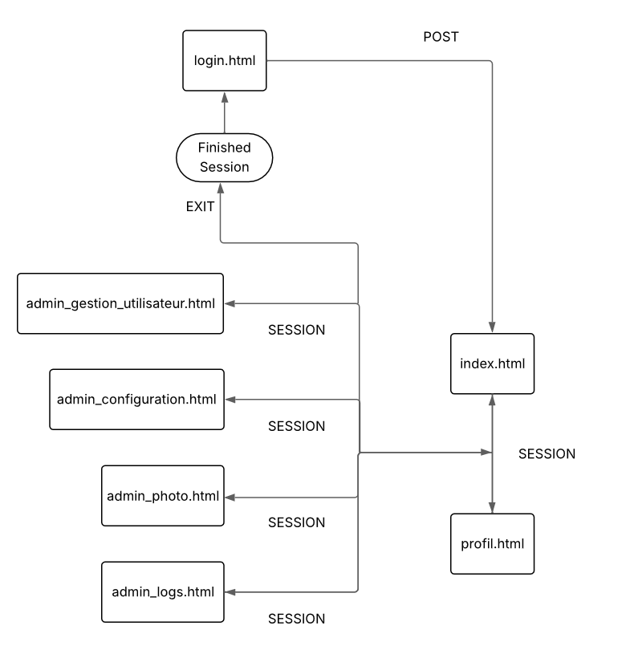
Pages dynamiques et BDD pour exploitation.
Mesures MER/BER/CN et diagnostic de réception.
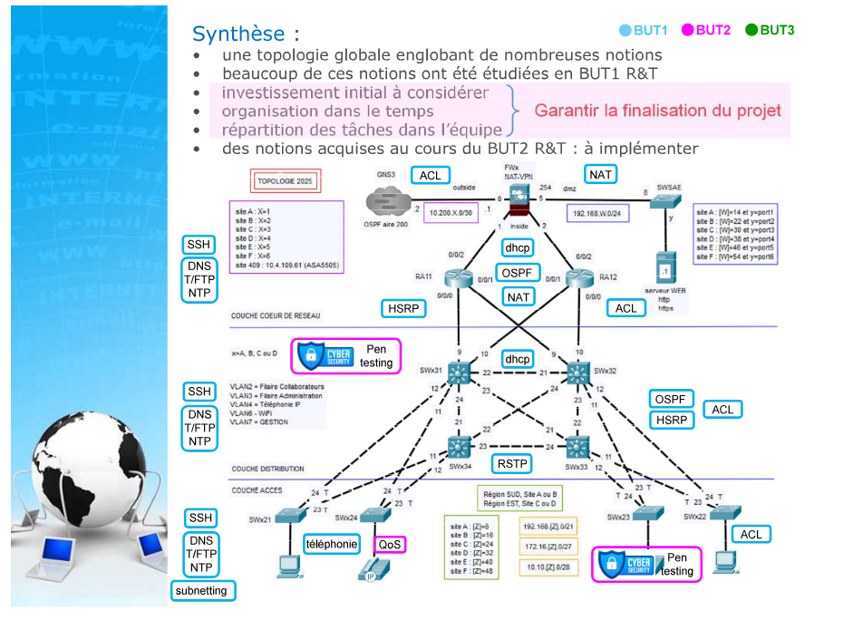
Conception, configuration et tests d’une topologie.
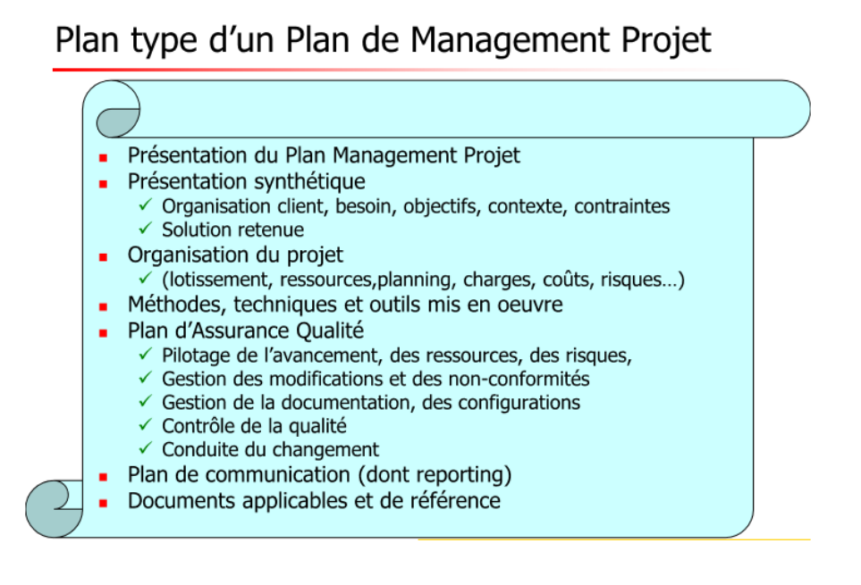
WBS, planning, RACI et gestion des risques.
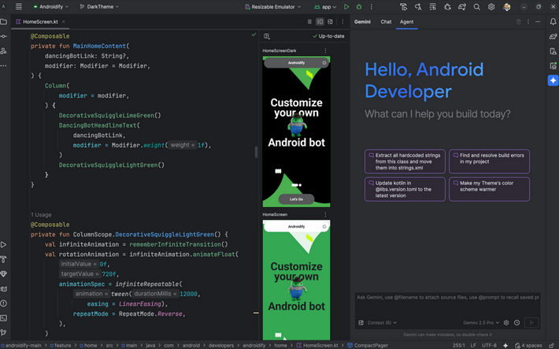
Préparation, analyse et synthèse des résultats.
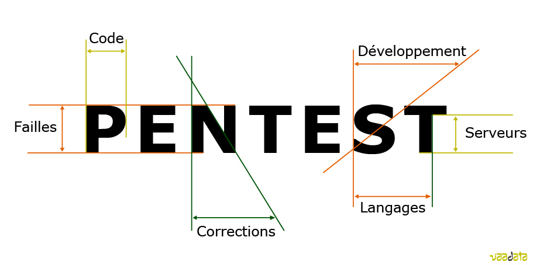
Méthode, preuves et recommandations correctives.
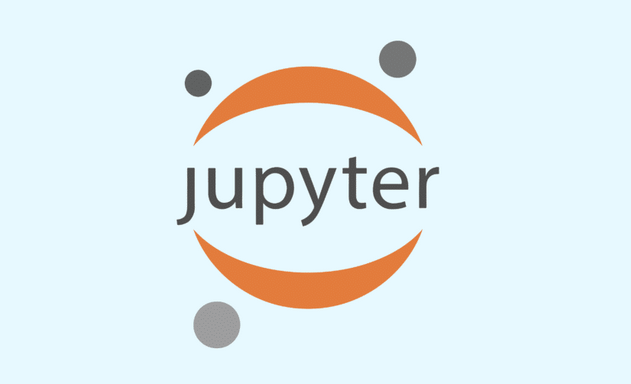
Nettoyage, exploration et visualisation.
Bienvenue dans la section "Compétences", ici vous pourrez découvrir les différentes compétences acquises au cours de ma formation.